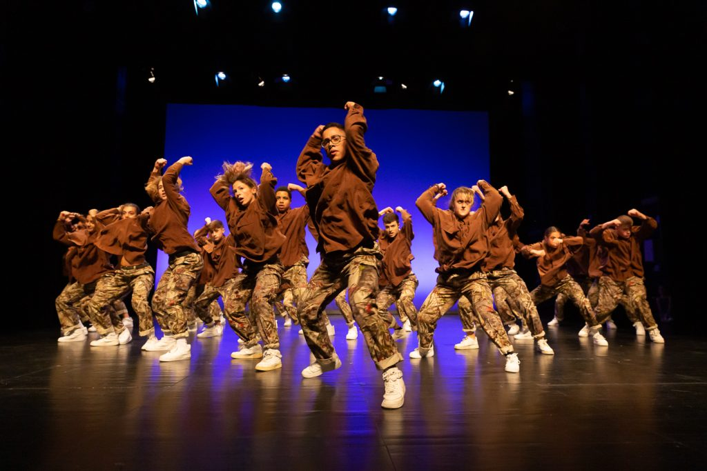

ROCK AND ROLL
Los más clásicos hasta los contemporáneos adaptados a los tiempos. El swing, el lindy hop, el jive y el boogie woogie son algunos de los estilos más clásicos sobre los que fue creado el rock and roll baile.

La danza urbana hace referencia a uno de los elementos que forman la cultura de Hip hop, la parte del baile. En estas clases aprenderemos su origen, pasos básicos, coreografías y herramientas para la improvisación.
Si lo que buscas es conseguir o mantener un estado físico óptimo combinando ejercicios, movimientos y coreografías, tenemos varios estilos para ofrecerte: Strong, Zumba, Pilates y Dance Move Technique.
Interiorizamos la base y técnica del ballet clásico y le incorporamos nuevos movimientos que permiten desarrollar la exploración y la creatividad, aportando al bailarín una mayor libertad.
Trabajamos la técnica tradicional del ballet, con un trabajo del cuerpo en su totalidad, con la delicadeza y finura que le caracteriza al estilo clásico de danza.
El bambuco tradicional recoge la más profunda tradición en el folclor, con una danza que lidera la mujer, y que incorpora elementos indígenas y campesinos, que se ejecutan con gran alegría y en medio de la celebración festival.
Los más clásicos hasta los contemporáneos adaptados a los tiempos. El swing, el lindy hop, el jive y el boogie woogie son algunos de los estilos más clásicos sobre los que fue creado el rock and roll baile.